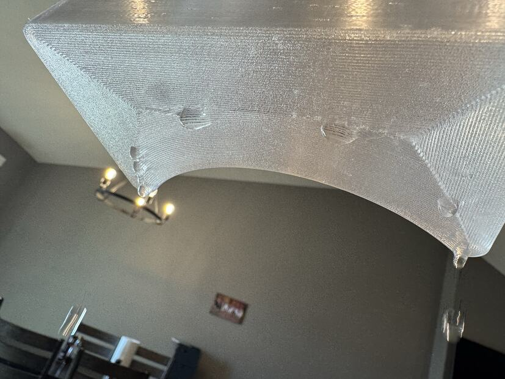
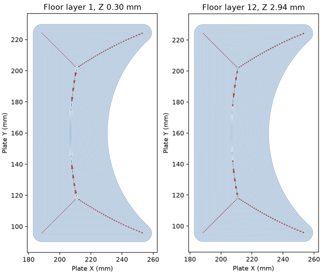

Watertight · a floor of loops
A floor made of loops leaks along its seams.
Loops laid side by side run out of room where they turn a corner and where they meet in the middle. Each of those places is a small gap, and it comes back on every layer.
Seen in Bambu PETG Translucent Clear · Mark 1 · right 0.8 mm · textured PEINot tried in: a flow above 1.02


Loops round fill. One seam, a closed line, and one setting pushes the fill across it. The floor on the page before.
Loops all the way in. No fill to push. A gap wherever a loop cannot follow its neighbour: at each turn, and along the middle.
45
loops in each floor layer of that print.
10 mm²
of floor left uncovered in each of its twelve layers. About a thousandth of the floor.
72% less
uncovered in the slice once a setting added centre roads where loops meet. Printed on 22 October, it leaked in the same place.
“I think I’d rather continue the walls forever, as we did in the sphere pressure vessel test. Another agent suggested at some point infill works better, but I haven’t seen that.”
“Leaks along the seam”
Of the second try: “Not sure that made any difference at all.”
What we do now
The floor is solid fill inside five loops. The loops-only floor has not been printed again.
In the record
Result and photograph · Gaps, layer by layer · The second try
Still openBoth loops-only floors were printed at flow 1.02, before the flow went up to the value that held. A floor of loops has not been tried at that flow, so this page shows that these two floors leaked, not that no floor of loops can hold. The sphere Derek remembered was printed in April 2026, and its settings were never found.